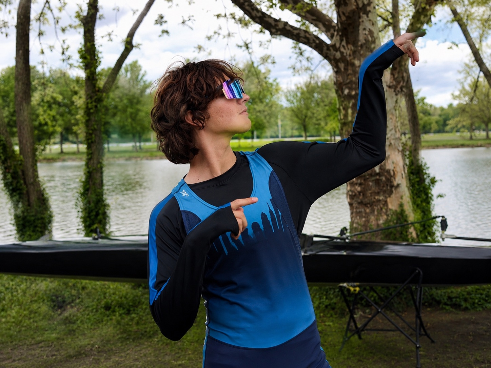

Rowing
Current 2k: 6:52. Recent progression from 6:59.2 to 6:52, with training aimed toward the low/mid-6:40s.
Class of 2027 • Harvest Collegiate High School • Row New York
Student-athlete in New York City, training as a rower with Row New York while preparing for a rigorous college path built around strong writing, disciplined argument, and public-facing fields such as law, policy, economics, and history.
Snapshot
Current 2k: 6:52. Recent progression from 6:59.2 to 6:52, with training aimed toward the low/mid-6:40s.
GPA: 95.5%. SAT: approximately 1300, with planned retakes during spring and summer.
Interested in pre-law preparation and fields that reward clear writing, evidence-based reasoning, history, institutions, and disciplined argument.
Visual profile
A quick visual snapshot of Elisey’s rowing environment, team context, and student-athlete presence.

Athletic profile
I row with Row New York and am continuing to build strength, endurance, and technical consistency. Rowing is one of the clearest ways I measure progress: the preparation shows up in the boat, on the erg, and in the result.
My 2k has improved from 7:30.9 on December 15, 2025 to 6:52.0 on May 5, 2026 — a 38.9-second improvement in under five months. This reflects steady progress and ongoing development.
My current near-term goal is 6:40, with a longer-term target of 6:20.
View recent Row2k resultInitial recorded 2k benchmark.
Significant early improvement.
First time under 7:00.
Current recorded 2k result.
Closest major target.
Longer-term target.

2k progression: 7:30.9 → 7:11.2 → 6:59.2 → 6:52.0, with a near goal of 6:40 and a stretch goal of 6:20. Swipe horizontally on mobile to view the full chart.
Academic profile
I am interested in academic areas that require close reading, structured argument, careful evidence, and responsibility: law, public policy, economics, history, philosophy, and political institutions.
My goal is to find a college environment where I can grow intellectually, contribute to a rowing team, and build a strong foundation for law school or another rigorous graduate path.
Personal story
Rowing does not allow much hiding. A rower has to face preparation, consistency, pain, teamwork, and measurable results. That has changed the way I think about improvement.
A 2k score does not tell the whole story, but it does show whether the work is moving in the right direction. Improving from 6:59.2 to 6:52 showed me that progress comes from structure and ownership, not just effort.
That lesson matters beyond rowing. In school, in writing, and in future legal or public-policy work, the same principle applies: evidence matters, preparation matters, and discipline compounds.
College goals
I am looking for a college with strong teaching, demanding writing and discussion-based courses, and opportunities connected to law, public life, policy, history, economics, and civic institutions.
I want to contribute to a rowing program where I can keep improving, support my teammates, and compete in an environment that rewards consistency, discipline, and accountability.
Contact
Full academic and athletic information, race updates, and references are available upon request.
For recruiting conversations, phone number and additional athletic or academic materials can be shared directly with coaches and appropriate school contacts.